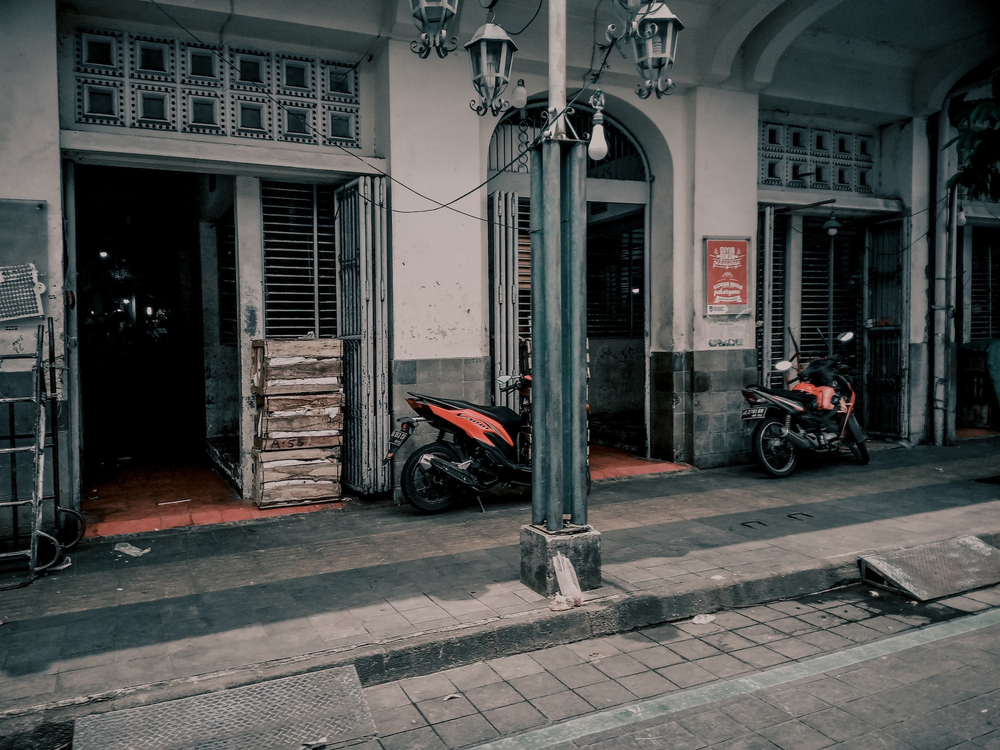
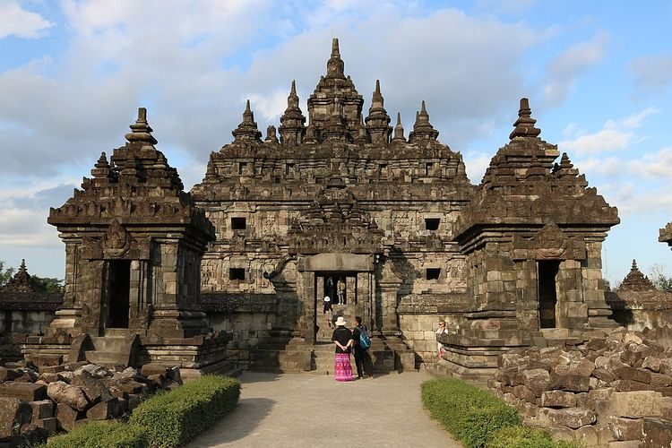
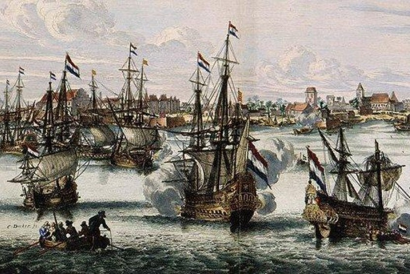

Apa itu Surakarta?
Kota Surakarta, juga disebut Solo atau Sala, adalah wilayah otonom dengan status kota di bawah Provinsi Jawa Tengah, Indonesia, dengan penduduk 514.171 jiwa (2016) dan kepadatan 11.675/km2. Wilayah Kota Surakarta berbatasan dengan Kabupaten Karanganyar dan Kabupaten Boyolali di sebelah utara, Kabupaten Karanganyar dan Kabupaten Sukoharjo di sebelah timur dan barat, dan Kabupaten Sukoharjo di sebelah selatan. Berdasarkan jumlah penduduknya, Kota Surakarta juga merupakan kota terbesar ketiga di pulau Jawa bagian selatan setelah Bandung dan Malang. Sisi timur kota ini dilewati sungai yang terabadikan dalam salah satu lagu keroncong, Bengawan Solo. Bersama dengan Yogyakarta, Surakarta merupakan pewaris Kesultanan Mataram yang dipecah melalui Perjanjian Giyanti, pada tahun 1755.
Jumlah penduduk Surakarta akhir tahun 2016 sebanyak 514.171 jiwa dengan komposisi jumlah penduduk lakilaki dan penduduk perempuan hampir seimbang yaitu 48,61% dan 51,39%. Berdasarkan data jumlah penduduk akhir tahun 2016, diketahui bahwa pertumbuhan penduduk di Kota Surakarta selama tahun 2016 adalah sebesar 0,38 %. Kepadatan penduduk Surakarta tahun 2016 sebesar 11.675 jiwa/km2. Kecamatan Pasar Kliwon merupakan kecamatan terpadat yaitu dengan kepadatan 15.882 jiwa per km2 . Sedangkan kecamatan dengan kepadatan penduduk terkecil yaitu Kecamatan Jebres dengan kepadatan 10.896 jiwa per km2.
sumber: http://perkotaan.bpiw.pu.go.id/n/kota-otonom/29Sejarah surakarta
Kota Surakarta pada mulanya adalah wilayah kerajaan Mataram. Kota ini bahkan pernah menjadi pusat pemerintahan Mataram. Karena adanya Perjanjian Giyanti (13 Februari 1755) menyebabkan Mataram Islam terpecah karena propaganda kolonialisme Belanda. Kemudian terjadi pemecahan pusat pemerintahan menjadi dua yaitu pusat pemerintahan di Surakarta dan Yogyakarta. Pemerintahan di Surakarta terpecah lagi karena Perjanjian Salatiga (1767) menjadi Kasunanan dan Mangkunegaran.
Pada tahun 1742, orang-orang Tionghoa memberontak dan melawan kekuasaan Pakubuwana II yang bertahta di Kartasura sehingga Keraton Kartasura hancur dan Pakubuwana II menyingkir ke Ponorogo, Jawa Timur. Dengan Bantuan VOC pemberontakan tersebut berhasil ditumpas dan Kartasura berhasil direbut kembali. Sebagai ganti ibukota kerajaan yang telah hancur maka didirikanlah Keraton Baru di Surakarta 20 km ke arah selatan timur dari Kartasura pada 18 Februari 1745. Peristiwa ini kemudian dianggap sebagai titik awal didirikannya kraton Kasunanan Surakarta.
Pemberian nama Surakarta Hadiningrat mengikuti naluri leluhur, bahwa Kerajaan Mataram yang berpusat di Karta, kemudian ke Pleret, lalu pindah ke Wanakarta, yang kemudian diubah namanya menjadi Kartasura. Surakarta Hadiningrat berarti harapan akan terciptanya negara yang tata tentrem karta raharja (teratur tertib aman dan damai), serta harus disertai dengan tekad dan keberanian menghadapi segala rintangan yang menghadang (sura) untuk mewujudkan kehidupan dunia yang indah (Hadiningrat). Dengan demikian, kata “Karta” dimunculkan kembali sebagai wujud permohonan berkah dari para leluhur pendahulu dan pendirian kerajaan Mataram.
Sejarah nama kota Solo sendiri dikarenakan daerah ini dahulu banyak ditumbuhi tanaman pohon Sala ( sejenis pohon pinus) seperti yang tertulis dalam serat Babad Sengkala yang disimpan di Sana Budaya Yogyakarta. Sala berasal dari bahasa Jawa asli ( lafal bahasa jawa : Solo ) Pada akhirnya orang-orang mengenalnya dengan nama Kota Solo.
sumber: https://tentangsolo.web.id/sejarah-singkat-kota-solo.htmlTempat untuk dikunjungi
Tempat-tempat di Surakarta yang patut untuk dikunjungi.